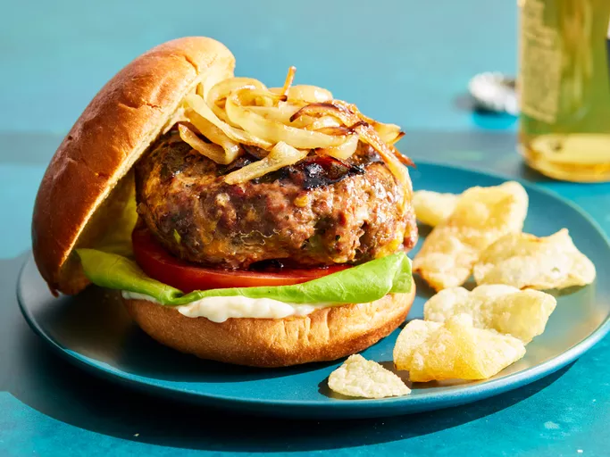

HAMBURGER

DESCRIPTION
A hamburger consists of the cooked ground meat patty which is usually
put inside the sliced bun. Sometimes, more than one patty is placed along with
cheese, mayonnaise, and other items to make the product thick and attractive.
The patty is made earlier and is stored under refrigerated/frozen conditions.
INGREDIENTS
- Beef: These basic burgers start with 1 ½ pounds of
lean ground beef.
- Onions: A finely chopped onion takes the flavor up a notch.
- Cheese: You'll need shredded Colby Jack or Cheddar cheese.
- Eggs: An egg lends moisture and helps the patties together.
- Seasonings,herbs and sauces: These hamburgers are
flavored with an envelope of dry onion soup mix, fresh garlic, garlic powder,
soy sauce, worcestershire sauce, dried parsley, dried basil, dried oregano,
crushed dried rosemary, salt, and pepper.
STEPS
- Gather all ingredients. Preheat an outdoor grill for high heat and lightly oil the grate.
- Meanwhile, combine ground beef, onion, cheese, egg, onion soup mix, minced garlic, garlic powder, soy sauce, Worcestershire sauce, parsley, basil, oregano, rosemary, salt, and pepper in a large bowl.
- Use your hands to form the mixture into 4 patties
- Cook patties on the preheated grill until no longer pink in the center and the juices run clear, about 4 to 5 minutes per side.
- An instant-read thermometer inserted into the center should read at least 165 degrees F (74 degrees C).
Home